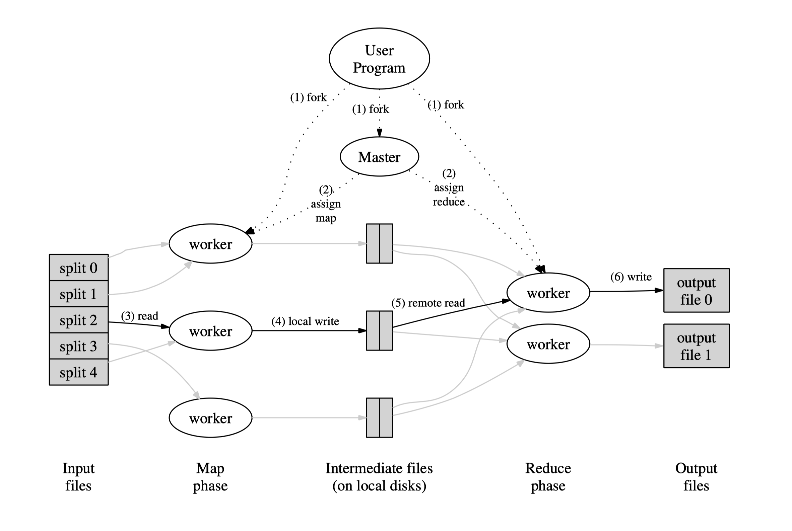

Review note for MapReduce: simplified data processing on large clusters

1 - Summary
A programming framework, MapReduce, is introduced to easily process large-scale computations on large clusters of commodity PCs. In a MapReduce model, users utilize a self-defined map function on mapping workers to process splits of input data, generating set of intermediate key/value pairs and use a reduce function on reducing workers to sort and merge the intermediate values with the same key. The paper also provides some programming model examples and typical implementations of MapReduce that process terabytes of data on thousands of machines. Some refinements of the model, the performance evaluation of the implementation, the use of MapReduce on indexing system within Google, and related and future work are also discussed in the paper.
2 - Problem
There are large amounts of data to be processed and generated in many real-world tasks. Although most computations are straightforward, in order to improve efficiency, they need to be distributed across thousands of machines due to the enormous amounts of data. The methods that distribute the data, parallelize computations, and handle failures involve large amounts of complicated code. The problem is how to implement those work in a simple and powerful way and make it fault-tolerant even across numerous machines.
3 - Solution
Authors designed a framework that dividing the parallelization and distribution tasks into Mapping and Reducing phases in general. Mapping tasks and reducing tasks are assigned to idle workers by the master. In the Mapping phase, input data are partitioned into several splits, and those splits can be processed by different machines (mappers) in parallel, generating intermediate key/value pairs that buffered to local disk. In the Reducing phase, reduce workers remotely read intermediate pairs and sort them by the keys so that those with the same key are aggregated together, and then pass the key and the corresponding list of values to the user-defined Reduce function, which return an output appended to an output file for that reduce partition. All the messy details of partitioning, execution scheduling, inter-machine communications, fault-tolerance, and load balancing are hidden in a library and accommodated by the run-time system. This makes the MapReduce interface simple, manageable, and powerful even for programmers without experience about parallel and distributed system.

4 - Novelty
MapReduce is a brand-new solution of distributed computations framework. It is inspired by primitive functions map and reduce in many programming languages. MapReduce is simple and more fault-tolerant, in comparison to many other contemporary parallel processing systems those are also restricted programming models but have only been implemented on smaller scales and leave machine failures to the programmers to handle. The locality optimization, backup task mechanism, and sorting facility of MapReduce have similarities in spirit to other techniques but are extended from different approaches.
5 - Evaluation
Authors evaluated the performance of MapReduce with two example computations running on a large cluster of PCs. One searches for a specific pattern through about one terabyte of data, the other sorts approximately one terabyte of data. The former shows the progress of the grep program in the aspect of data transfer rate. The latter shows how disabling backup tasks can slow down the execution comparing to the normal execution and demonstrated the strengths of machine failures handling. The differences between MapReduce and other existing methods are mostly discussed in terms of principles. In general, MapReduce is simpler (programmer-friendly), more fault-tolerant, extendable than other parallel processing systems.
6 - Opinion
In the Performance section, the measurements of two implementations (search and sort) only focus on the strengths of MapReduce model and weaknesses are barely discussed. Also, it would be better if there were some comparisons with similar parallelization methods towards the same tasks. One of the most convictive parts to me is the Experience section, stating the progresses and enhancements of MapReduce and its wide-ranging applications within Google, especially the large-scale indexing system.
Source:
[1] Dean, J. and Ghemawat, S., 2008. MapReduce: simplified data processing on large clusters. Communications of the ACM, 51(1), pp.107-113.
评论